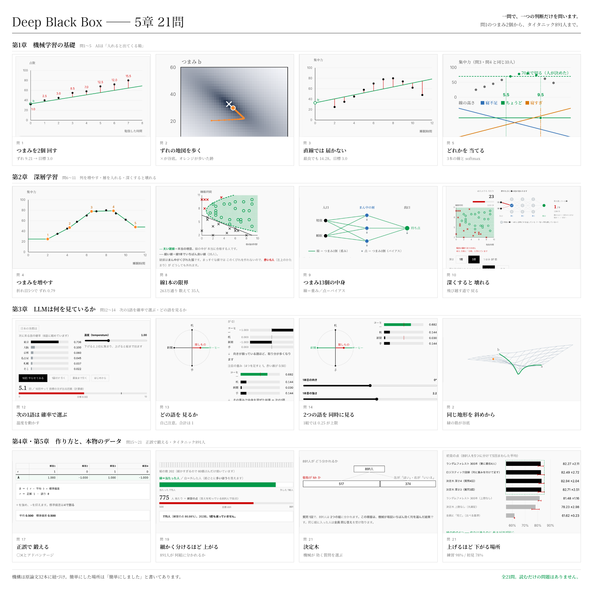

何が学べるか
| 章 | 中身 | 問 | |
|---|---|---|---|
| 1 | 機械学習の基礎 | AIは「入れると出てくる箱」。つまみを回す・坂を下る・確率に直す | 1〜5 |
| 2 | 深層学習 | 列を増やす・単位をそろえる・層を入れる・深くすると壊れる | 6〜11 |
| 3 | LLMは何を見ているか | 次の1語を確率で選ぶ・どの語を見るか（注目） | 12〜14 |
| 4 | どうやって作るか | 次の語を当てる訓練・人の好みで整える・正誤で鍛える | 15〜17 |
| 5 | 本物のデータで使う | タイタニック891人。ここから先はKaggle | 18〜21 |
プロダクトの特徴
博士と高校2年生のやり取りで進みます。 説明を読むのではなく、会話を追っていくと分かる形にしました。
対話形式でわかりやすいAIの入門書も、触って動かせるAIの可視化ツールも、 一問ずつ出題して採点してくれる演習サイトも、すでに世の中にあります。
ただし、3つを兼ねたものは見つかりませんでした。だから作りました。
| 対話形式で読める | 自分で動かせる | 出題され、判定される | |
|---|---|---|---|
| 対話形式の入門書（数学ガールの秘密ノート など） | ○ | × | × |
| AIの可視化ツール（Transformer Explainer など） | × | ○ | × |
| 一問形式・自動採点の演習サイト（Deep-ML など） | × | ○ | ○ |
| Deep Black Box | ○ | ○ | ○ |

読むだけの問題は1つもありません。多くの問題にはつまみ（左右に動かすスライダー）が並んでいて、動かしているのはAIの中身の数値そのもの、つまりパラメータです。つまみのない問題は、ボタンで切り替えたり、3択で先に予想したりする形になります。
AIは難しいので分かりやすく書く必要がありますが、分かりやすくしすぎると正確ではない表現になることがあります。だから機構は原論文32本に紐づけました。原論文から解き明かす生成AIという本で紹介されている原論文32本を参照しています。そして、このゲームのために簡単にした場所は「ここは簡単にしました」と書いてあります。
インストールも環境構築も不要。ブラウザで開くだけ。スマートフォンでもできます。
なぜ作ったか
AIをつくる人を増やすには、原理を学ぶ入口が要ります。
そう考えたのは、国際人工知能オリンピック（IOAI）2025 銅メダリスト・開成高校3年の山井勇人さんです。彼がこの世界を知ったのは高校1年の冬。偶然でした。それから1年たたずにメダルを取っています。足りていなかったのは能力ではなく、知る機会でした。
「AIをどう使うか」はよく語られます。けれど、中で何が起きているかは、あまり教わりません。
六本木ベンチャーキャピタルの「Agora」第1回で、5人とAIが2時間 議論しました。数学や構造の面白さに反応する高校生に、入口を1つ届けるために作ったものです。
Agoraは、突出した若い才能が、AIと深く議論して、まだ世にない新しいものを生み出すプログラムです。